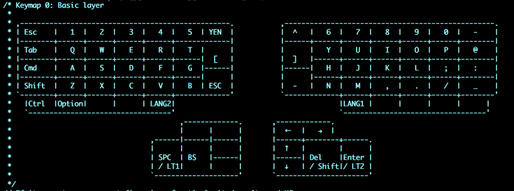
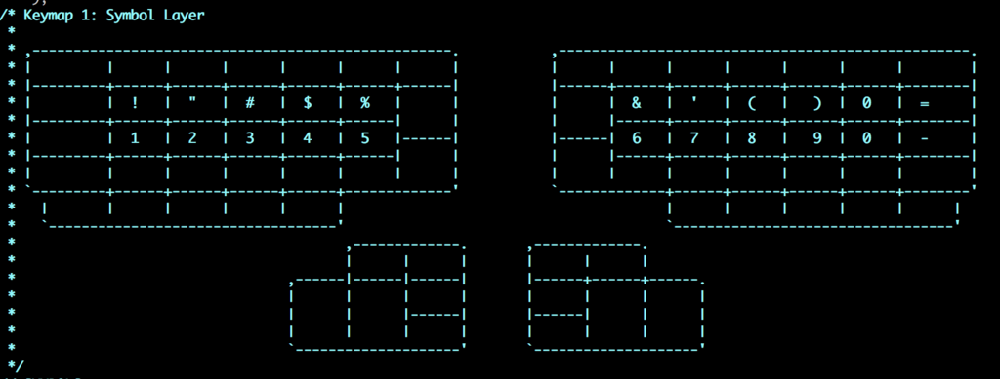
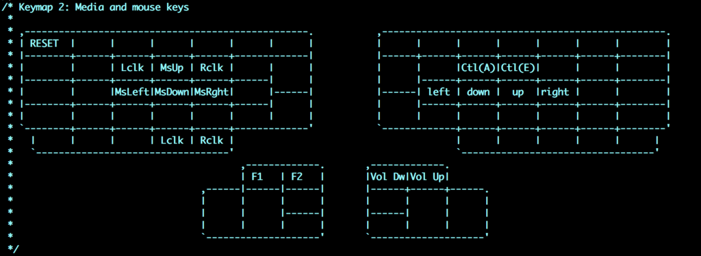

ErgoDox EZ 3週目 現在のキー配列
ErgoDox EZを使い始めて3週間。 まだまだキー配置は試行錯誤中ですが、現在の配置と考えを書いておきます。
前提
- 移行コストを低くする
- 他のキーボードを極端に使えなくならないようにする
- そのため、JIS配列に近い形にする
- まずは親指部分を有効活用して、不自然な動きを少なくしていく
- 慣れてきたら次の形態を考える
JIS配列
- リポジトリの中にJIS用の定義ファイルがあるので、それをimportする
#include "keymap_jp.h"
- 通常キーはKC_で定義されていますが、こちらではJP_で定義されてる
- キー配置のドキュメント
- 通常
- JIS
レイヤー0
- 通常使うレイヤー
- できるだけJIS配列に従う
- 右側のキーが足りない部分は中央付近へ
- かな/英数の切り替えは親指内側で行う(LANG1,2)
- 親指はEnterとSpaceは右左で分けたかった
- BackSpaceも、まあここでいいかなと
- Delはそんなに使わないけど、とりあえず

レイヤー1
- Space押しっぱなしで発動（左親指）
- 数字＋記号
- 最上段まで指を伸ばしたくない
- 将来的にIrisを使って見たいので、移行できるかどうかのシミュレーションに。

レイヤー2
- Enterを押しっぱなしでレイヤー2を発動。（右親指）
- カーソル移動
- 右側
- vimに合わせて左下上右
- 行頭、行末
- 左側
- マウス操作を入れてるけど、まだあんまり使ってない
- 下側
- 音量と明るさのコントロール
- リセットボタン
- いろんな記事に書いてありますが、毎回物理リセットボタンを押すのは現実的じゃないので、どこかに配置しておいたほうが良いです
- 右側

課題
- 親指を使いすぎている気がする
- 元々は、かな/英数とスペースを両親指で担っていた
- 親指を活用したいが、逆に親指が疲れてしまいそう
- まだ脳が慣れていないので、余計に負荷があるように感じる
- 今の、LANG1,2は見直した方が良いかもしれない。親指は親指エリアだけにしておくかも。